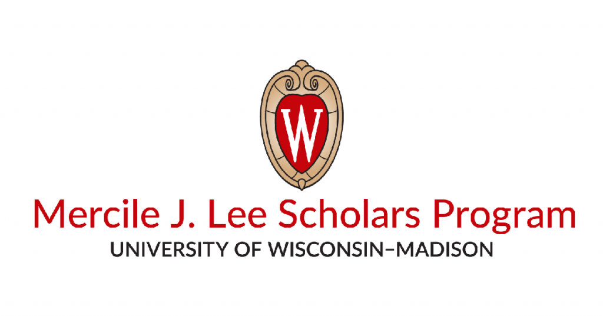

Hello there! My name is Alex Nouansacksy, and I am a Freshman Information Science and Data Science double major here at UW-Madison.
I originally entered the University as an intended Computer Science Major, so you can see some of the projects I've worked on in the projects tab!
While I am not on the Computer Science any more, I did, however, find out that I have a passion for Information Technology, and I declared my Information Science Major
I further dove into my interest in IT when I began working at the University of Wisconsin Division of Information Technology.
Here at DoIT, I've been taught troubleshooting, commmunication, and leadership skills which I hope to use in the future.
I look forward to deepening my knowledge in the field! I also enjoy brushing up on the latest in Cybersecurity in my spare time.
In addition to my work at DoIT, I've also been a member of the Mercile J. Lee Scholars program here at UW-Madison.

As a scholar, I with others from various different background, and engage in a variety of
activities and responsibilities designed to foster academic success, leadership skills, and community involvement.